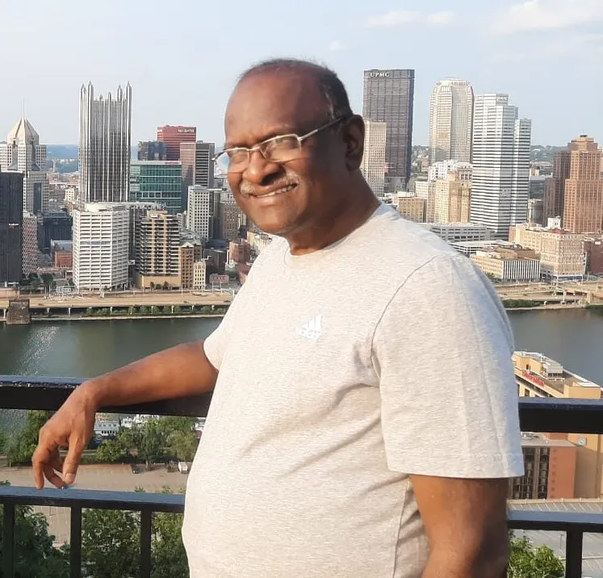

Dr. Javaji Ravi Prasad
MD, DMRD – Professor of Radiology
A distinguished medical professional with over 35 years of expertise in Radiology and Medical Education, Dr. Javaji Ravi Prasad is the visionary Founder and Managing Director of NIVA Surgery.
As a Professor at Raja Rajeshwari Medical College, he has guided numerous postgraduate students, inspiring them toward excellence in diagnostic and clinical practice.
Driven by a passion for precision, technology, and compassionate service, Dr. Javaji Ravi Prasad established NIVA Surgery in 2026 at Chandra Layout, Bengaluru.
He is also the founder of Vinayaka Hospital and Raghavendra Diagnostic Center, which have been serving patients across Bengaluru for over 25 years.